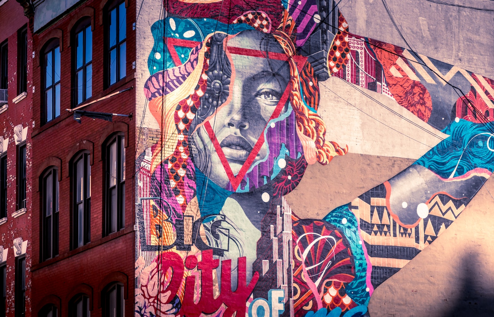

Graffiti Arts

Graffiti art first appeared in New York in the 1970s when youths started defacing buildings and the walls of subway cars
using spray paint and other materials to create pictures. Graffiti of this type may include stylized monograms (tag) or
vivid graphic imagery (wildstyle).
Even though actual graffiti is rarely seen in art galleries and museums, its look has been integrated into works by
artists. Jean Dubuffet, a French artist who included tags and graphic motifs into his paintings, as well as New York
painters Jean-Michel Basquiat and Keith Haring, who are considered to be the forefathers of street art, were early
adopters of graffiti in the field of fine art. Recently, commercial settings have included the work of graffiti artists like Banksy and Barry McGee.
Key Features of Graffiti Arts:
-
Urban Expression: Graffiti art is frequently spotted on walls, buildings, bridges, and other public locations and is frequently linked
with metropolitan settings. It flourishes in urban and metropolitan settings where artists may reach a larger audience
and comment on their environment.
-
Visual Language: Graffiti artists have their own visual language that is distinguished by their use of large, vibrant, and frequently
elaborate letters. Various methods, such as tags (rapid signatures), throw-ups (basic two-tone bubble letters), pieces
(more sophisticated works), and murals (huge artworks), are frequently used in this kind of art.
-
Social and Political Commentary: Graffiti artists frequently express their opinions on social and political issues, including injustice, racism,
environmental issues, and more, in their work. It may serve as a vehicle for advocacy as well as a way to promote
community conversation.
-
Risk and Legal Issues: Without authorization, graffiti art is frequently done, which can result in legal problems and the perception of
vandalism. Because of this, graffiti artists frequently operate at night or in remote areas to avoid being seen.
-
Underground Culture: Graffiti art has become more widely accepted, yet it hasn't lost its roots in underground culture or the rebellious
attitude that gave rise to it.